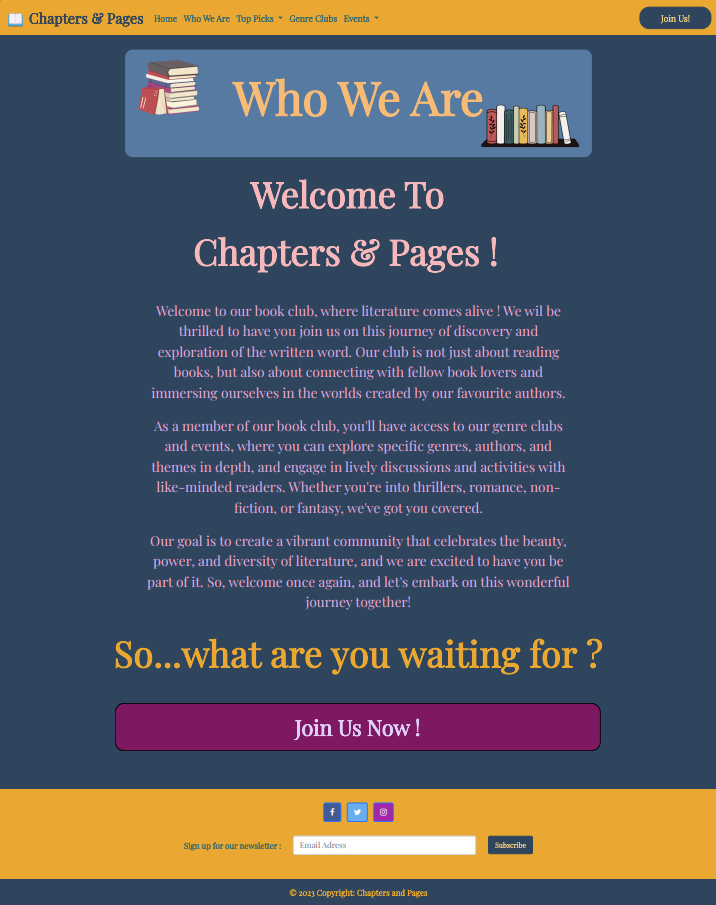

My website is a book club platform that aims to attract book enthusiasts to
join the club and participate in its events. The essential story being told by
the site is one of a community of like-minded individuals who are passionate
about reading and want to connect with others who share the same interests.
To achieve this, the site has been structured in a way that is
user-friendly and easy to navigate. The homepage provides an overview of the
book club, its mission and values, and the benefits of joining. The site
offers a variety of resources for book recommendations, categorized by genres,
to help users find a book they will enjoy.
Existing members can
check in for events and other updates while new visitors can browse the site
and decide if they want to join. The site is designed to encourage visitors to
sign up, participate in discussions and events, and ultimately become members
of the book club.
In summary, the website is designed to be a
welcoming and engaging platform for book lovers to connect and share their
passion for literature.
1. The Netflix book club site [1]
2. Book Clubs website [2]
3. Good Reads website [3]
My website is designed with accessibility in mind and offers multiple features
to ensure that it is accessible to a wide range of users, including those with
disabilities. Here are three ways in which the site is accessible:
1. Keyboard Navigation: The website is built with keyboard-only navigation in
mind. This means that users with physical disabilities who are unable to use a
mouse can still navigate through the site using only their keyboard.
2.
Alternative Text: All images on the site have descriptive alternative text
that explains what the image is showing. This is particularly useful for
visually impaired users or those using a screen reader.
3. Color
Contrast: The site uses a combination of warm and cool colors with high
contrast between text and background. This makes the site easier to read for
users with color blindness or low vision.
In summary, the website
is designed to be accessible to a wide range of users, regardless of their
abilities. By incorporating these features, we strive to provide an inclusive
and user-friendly experience for everyone who visits our site.
Ensuring the usability of my site has been a top priority in the design
process. Here are three ways in which I have considered usability:
1. Intuitive Navigation: The site features an easy-to-use navigation system
that is always accessible to users. The navigation bar is fixed at the top of
the site, while the footer is fixed at the bottom, allowing users to quickly
find the content and pages they are looking for.
2. Responsive Design: The site is optimized for use on all devices, including
computers, tablets, and smartphones. This ensures that users can access the
site from any device and that the site functions properly regardless of the
screen size.
3. Clear Calls-to-Action: The website features clear
calls-to-action that guide users to take specific actions, such as signing up
for the book club. The buttons for the calls-to-action are strategically
placed to lead users to different parts of the site and encourage them to
engage with the content.
In summary, usability is a critical aspect
of website design, and I have taken great care to ensure that my site is
intuitive, responsive, and easy to navigate. By incorporating these features,
I aim to provide a seamless and engaging user experience that encourages
visitors to explore the site and join the book club.
Creating a website can be a challenging process that requires learning new
skills and techniques. Here are three things that I had to learn or find out
to create my site, and how I achieved that:
1. Creating an infinitely moving carousel: To achieve this effect on my top
picks page, I had to learn how to use HTML and CSS to create a carousel that
would pause on mouse hover. I found online resources that explained the
necessary code and then modified it to fit my design and presentation.
2. Form validation: On the join us page, I needed to create a form that could
be validated to ensure that only valid input was accepted for registration. To
achieve this, I customized the bootstrap code and added JavaScript validation
to the form.
3. Implementing a back to top button: To enhance user experience on every
page, I implemented a back-to-top button that appears when the user scrolls
down. This was achieved using JavaScript to interact with the DOM. This button
allows the user to move up the page with just the click of the button rather
than scrolling up endlessly.
In summary, creating a website requires continuous learning and
problem-solving. By leveraging online resources, customizing existing code,
and incorporating new techniques, I was able to create a website that meets my
design and functionality goals.
Reflecting on my work, I believe that several aspects were particularly
successful:
1. Appealing Appearance and Color Palette: The pages of my website have an
attractive appearance, thanks to the contrasting colors that work well
together. Although I initially had some doubts about the combination, I took
the risk and it paid off.
2. Image Carousels: The image carousels implemented on the events page and top
picks page were successful. I utilized online resources and made some
modifications to create an engaging and user-friendly experience for
visitors.
3. Form Validation: The join us page's form validation was a key success. By
implementing JavaScript validation, I was able to ensure that only valid
inputs were accepted, enhancing the user experience and allowing for proper
submission of information.
Overall, I am pleased with the final result of my website. The successful
aspects mentioned above contributed to creating an attractive, user-friendly,
and functional site that meets the needs of book lovers who are interested in
joining the book club.
Upon reflection, I recognize that there are a few aspects of my work that
could be improved:
1. Lack of Content and Pages: While my website provides basic information
about the book club, it could benefit from additional content and pages that
would allow users to explore more. For example, I could add testimonials from
current members to create a more personal connection with potential
members.
2. Limited Responsiveness: Although the site is responsive, the content
changes font size but the positions remain the same. To improve this, I could
consider implementing collapsible content, allowing users to focus on specific
information while maintaining a clean and organized layout.
3. Optimization: I could have spent more time optimizing the site for faster
loading times, which would enhance the user experience.
If I were to do things differently next time, I would ensure that the site has
more content and pages to offer, improve responsiveness and optimize the site
for faster loading times. Additionally, I would conduct user testing to gather
feedback and identify areas for improvement throughout the development
process.
[1] netflixbookclub.com, ‘netflixbookclub’, unknown . [Online]. Available:
https://www.netflixbookclub.com/ [Accessed: Feb - 2023].
[2]
bookclubs.com, ‘BOOKCLUBS’, unknown. [Online]. Available:
https://bookclubs.com/ [Accessed: Feb - 2023].
[3] goodreads.com,
‘goodreads’, unknown. [Online]. Available: https://www.goodreads.com/
[Accessed: Feb - 2023].
[4] boostrap.com, ‘getbootstrap’, unknown.
[Online]. Available: https://getbootstrap.com/ [Accessed: Feb - 2023].
[5] animate on scroll library, ‘AOS’, unknown. [Online].
Available: http://michalsnik.github.io/aos/ [Accessed: Feb - 2023].
[6] google fonts, ‘Google Fonts’, unknown. [Online]. Available:
https://fonts.google.com/ [Accessed: Feb - 2023].
[7] infinite
carousel, ‘Infinite Carousel’, unknown. [Online]. Available:
https://codepen.io/rezaminaee/pen/qeqvaP [Accessed: Feb - 2023].
[8] Playlists from Spotify, ‘Spotify’, unknown. [Online].
Available: https://open.spotify.com/ [Accessed: Feb - 2023].
1. wireframe desktop:
2. wireframe tablet:
3. wireframe smartphone: report-images/wireframe_smartphone
4. site map:
5. mockup home page:
6. mockup who we are page:

7. mockup top picks page:
8. mockup genre clubs page:
9. mockup events page:
10. mockup join us page: